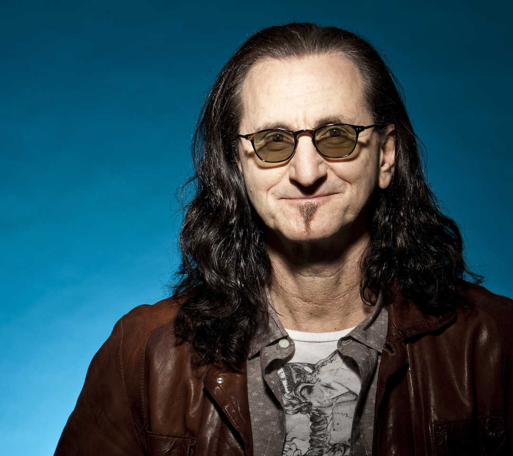
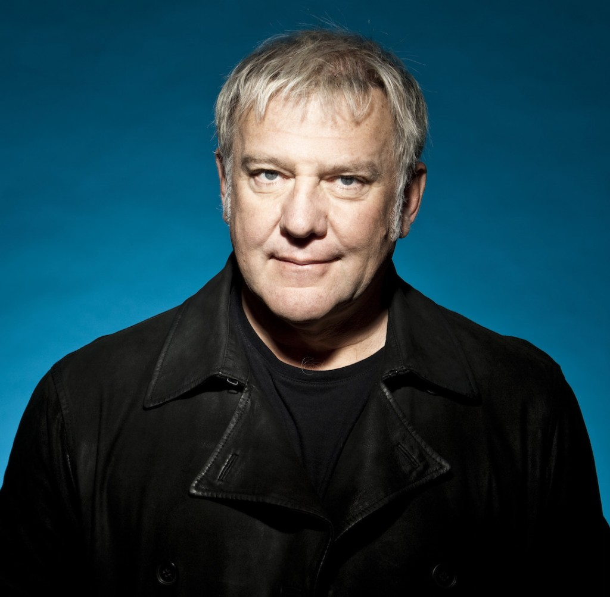

Members of Rush

Geddy Lee: Bass, Vocals, Keyboards
Geddy Lee, born Gary Lee Weinrib on July 29, 1953, in Toronto, Ontario, is the unmistakable voice and thunderous bass behind Rush's iconic sound. The son of Polish Jewish immigrants and Holocaust survivors, Lee’s upbringing was shaped by a deep sense of resilience and heritage. His nickname, “Geddy,” stemmed from his mother’s thick accent, which made “Gary” sound more like “Geddy”—a moniker that stuck for life. He began playing music in his teens, inspired by bass legends like Jack Bruce, Chris Squire, and John Entwistle, whose complex bass lines motivated him to push the instrument’s boundaries. Lee joined Rush in 1968, stepping in after the original bassist left, and quickly became the band’s vocal and melodic anchor, known for his high-register voice and his ability to simultaneously handle keyboards and bass with astonishing coordination. Outside of Rush, Lee explored his musical identity further with a 2000 solo album titled My Favourite Headache, and in 2018, he channeled his passion for the instrument into Geddy Lee’s Big Beautiful Book of Bass, a celebrated tribute to the history of the bass guitar.
Personal Life
In addition to his work with Rush, Geddy Lee has maintained a rich personal life. He has been married to Nancy Young since the 1970s, and together they have two children. Known for his intellectual curiosity and meticulous interests, Lee is an avid collector of vintage bass guitars and fine wine, as well as a lifelong baseball fan, particularly fond of the Toronto Blue Jays. His offstage demeanor contrasts his energetic stage presence; in interviews, he comes across as thoughtful, humorous, and deeply devoted to his craft. Even after Rush retired from touring in 2015, Lee remained active in music and writing, continuing to shape the world of rock with his insights and mentorship. His contributions to progressive rock—especially through his innovative multi-instrumental performances—cement his legacy as one of the most versatile musicians of his generation.
Alex Lifeson: Guitar and Backup vocals
Alex Lifeson, born Aleksandar Živojinović on August 27, 1953, in Fernie, British Columbia, is the sonic architect behind Rush’s intricate and emotionally resonant guitar work. The son of Serbian immigrants, Lifeson was raised in Toronto, where he began playing violin as a child but switched to guitar in his early teens, drawn to the power and freedom of rock music. A founding member of Rush in 1968, Lifeson remained the only consistent member throughout the band’s initial lineup changes, bringing both stability and evolution to their sound. His guitar playing, marked by atmospheric textures and fierce riffing, often bridged the gap between prog-rock complexity and raw emotion, shifting seamlessly between genres as the band’s sound evolved. Known for his improvisational skill, he pushed the boundaries of what rock guitar could achieve, often experimenting with effects, alternate tunings, and dynamic shifts that made each album feel new. While Geddy and Neil often received attention for vocals and lyrics, Lifeson was the secret weapon, the musical glue binding Rush’s compositions together.
Personal Life
In his personal life, Lifeson has maintained a grounded and private lifestyle. Married to his high school sweetheart Charlene since 1975, he is the father of two sons and is known for his dry humor and laid-back demeanor. Outside of music, he is an avid golfer, visual artist, and hobbyist pilot. Though often the least publicly vocal of the trio, Lifeson has continued to create after Rush's retirement, launching a new project in 2022 called Envy of None, which leaned into ambient and electronic influences—a far cry from Rush's signature bombast. He also remains active in charitable work, supporting healthcare and arts organizations across Canada. Lifeson’s contributions to rock guitar are vast and often underrated, but his ability to merge technical complexity with lyrical beauty ensures his place among the greats.

Neil Peart: Drums and Lyrics
Neil Ellwood Peart, born on September 12, 1952, in Hamilton, Ontario, was not only Rush’s drummer but also its primary lyricist and philosophical compass. Raised in St. Catharines, Ontario, Peart began playing drums in his youth, later refining his technique through rigorous study, most notably under legendary jazz drummer Freddie Gruber. When he joined Rush in July 1974, replacing original drummer John Rutsey, the band was immediately transformed by his technical prowess and intellectual depth. Peart’s drumming combined precision with power, featuring elaborate kit setups, complex time signatures, and an unparalleled attention to rhythm. At the same time, his lyrics introduced themes of science fiction, libertarian philosophy, mythology, and existentialism—turning albums like 2112 and Moving Pictures into conceptually rich masterpieces. Fans and critics alike heralded Peart as one of the greatest drummers of all time, often calling him “The Professor” for both his cerebral approach and his teaching influence on generations of drummers.
Personal Life
Neil Peart's life was marked by both triumph and tragedy. In the late 1990s, he endured the loss of his only daughter, Selena, in a car accident, followed by the death of his wife Jackie from cancer less than a year later. Devastated, Peart took a hiatus from music and embarked on a long motorcycle journey across North and Central America, chronicled in his memoir Ghost Rider: Travels on the Healing Road. He eventually found healing and returned to Rush in 2001, resuming his creative duties with renewed purpose. His later years saw continued musical excellence, including the concept album Clockwork Angels in 2012, as well as several books exploring travel, philosophy, and drumming. In 2015, he retired from performing due to chronic health issues, including tendonitis and arthritis. Peart died on January 7, 2020, after a private three-year battle with brain cancer (glioblastoma), a loss mourned deeply by fans around the world. His legacy as a writer, drummer, and seeker of truth remains unparalleled in the rock world.